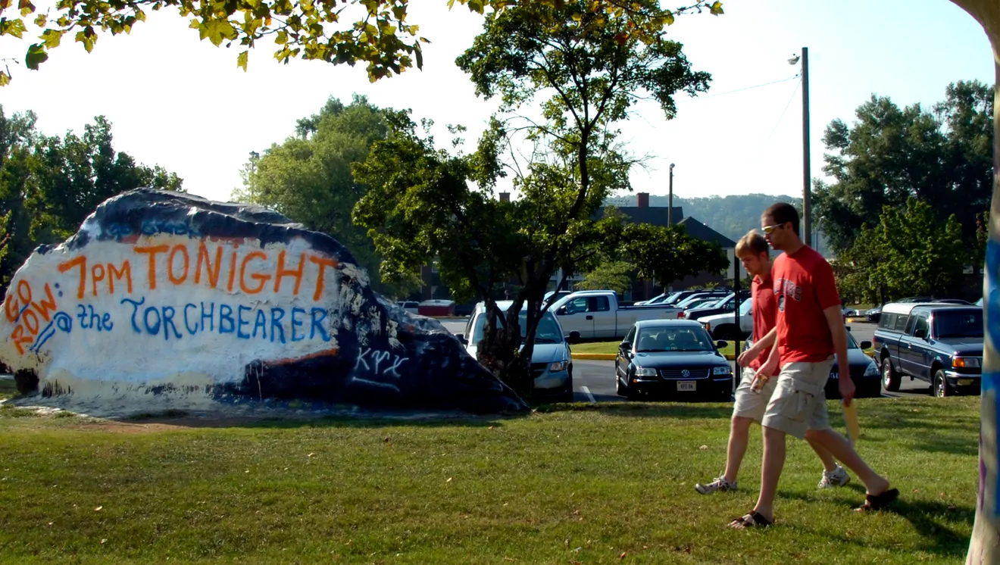

back
2007

research on the rock
Bill Dunne, professor of earth and planetary sciences, took a small sample from the Rock and determined that the slab was 500 million years old and composed of Knox dolomite. Based on the direction of the sediment layers, he determined that the Rock was originally in the ground on its side compared to its current position.